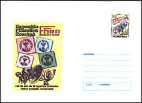
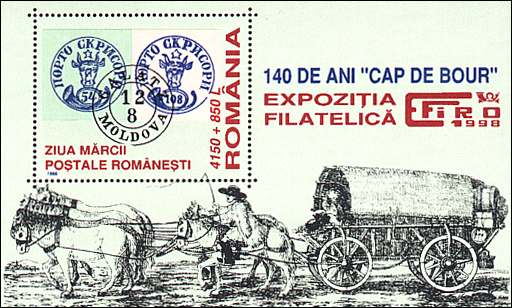
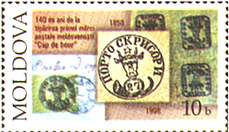
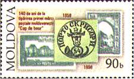
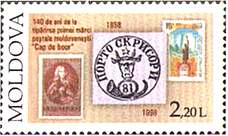
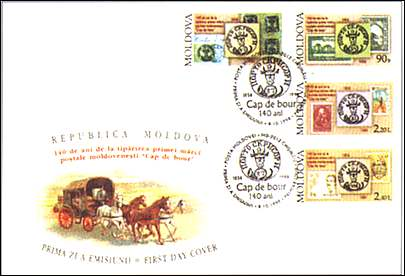
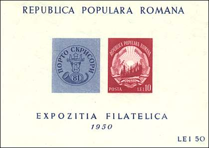
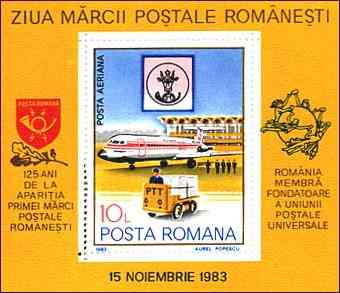
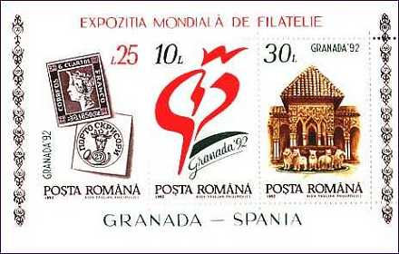

|
MOLDAVIAN CLASSICAL STAMPS |

|
|
MOLDAVIAN CLASSICAL STAMPS |
Romanian Issue 1998
In 1998 the Romania postal
administration celebrated the 140th anniversary of the first Romanian stamp by
issuing a set of two values and a commemorative sheet. The 700 Lei stamp
reproduces the 81 parale, the 1050 Lei stamp the 27 parale stamp. Both stamps
and the sheet are labeled: Ziua marcii postale românesti, with the meaning:
The Day of the Romanian postal stamp.
|
 |
 |
The sheet shows a pair of 54 parale and 108 parale values, cancelled by one and the same cancel (Galatz, Moldova). The sheet is labeled also with Philatelic Exhibition EFIRO (Expozitia Filatelica Romana - Philatelic Romanian Exhibition). The postal card is also dedicated to EFIRO-98. For other Romanian stamp day and coaches issues please click here.
The Republic of Moldova celebrated its first stamps by an issue of 1998, composed of four stamps. The backgrounds of stamps show the evolution of Moldavian stamps, concentrating of four historical periods. The first period, on the 10b value, is that of the apparition of the stamp. The second, on the 90 b value shows stamps issued between WW I and WW II, when Moldova was a part of Romania.
Moldavian Issue 1998
|
 |
 |
The 2.20 Lei value shows stamps related to it and issued when Moldova belonged to the USSR. The 2.40 Lei value presents stamps issued after its independence. each of stamps shows in the foreground one of the Bull Heads original issues. Nice!
|
 |
 |
Romanian Exhibition and Stamp Day
|
 |
 |
A Bull's Head stamp appeared on the sheet issued in 1950, on a sheet issued for the first national exhibition held after the WW II. A good occasion for making some publicity for the new Romanian coat of arms, that will stay till 1990.
The year 1983 was that of the 125th anniversary of the first Romanian stamps. The sheet on the right commemorates the event, mentioning also Romania as founding member of the UPU. In the background is displayed the building of the International Airport Bucharest - Otopeni.
World Philatelic Exhibitions
 |
 |
Bull's Heads appeared also on sheets commemorating the presence of Romanian philatelists at two world philatelic exhibitions.
Spain. World Exhibition Grenada-92. Spain No. 1 and Moldova No. 1.
Great Britain. World Exhibition London '90. GB No. 1 (Penny Black) and Moldova No. 1. In the background the Alexandra Palace in London, the place where the exhibition was held.
| Created
22/04/1999. Revised:
03/24/07. Copyright © 1999 - 2007 by Victor Manta, Switzerland. All rights reserved in all countries. |